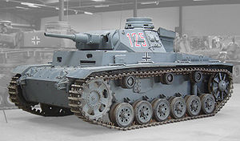

Про танки
Здесь будет рассказано о истории танкостроенния, начиная с Mark-1. История будет поделена на 4 этапа:
1.Первая мировая война
2.Вторая мировая война
3.Авганская война
4.Война в Сирии
Первая мировая война
В этой вйоне был создан первый танк - Mark-1.
text
Вторая мировая война
Здесь будет рассказано о наиболее известых танках. Для удобства разделим войну на несколько этапов:
Период 1939-1940. Блицкриг
Именно на это время пришелся «звездный час» Panzerkampfwagen III и Panzerkampfwagen IV. За столь неуклюжими названиями скрываются грозные боевые машины, намотавшие на свои гусеницы асфальт европейских дорог, ледяные просторы России и пески Сахары.

Период 1941-1942. Красный рассвет
В эти года были созданы легендарные Т-34 и КВ.

text

tex t
Год 1943. Зверинец.
Стремясь вернуть утраченное техническое превосходство, Германия создает к этому времени два новых образца «супероружия» - тяжелые танки «Тигр» и «Пантера».Panzerkampfwagen VI «Тигр» Ausf. H1 создавался как тяжелый танк прорыва, способный уничтожить любого противника и обратить в бегство Красную Армию.Понимая, что «Тигр» - редкое и экзотическое оружие профессионалов, немецкие танкостроители создали более простой и дешевый танк, с намерением превратить его в массовый средний танк Вермахта. Этим танком является Panzerkampfwagen V «Пантера».
text
text
Год 1944. Вперед на Берлин!
Танки-освободители ИС-2 стали олицетворением Победы и находились на вооружении Советской армии без малого 50 лет.Следующий герой, М4 «Шерман», успел повоевать на Восточном фронте, первые машины этого типа попали в СССР еще в 1942 году (число поставленных по Ленд-лизу М4 составило 3600 танков). Но известность к нему пришла лишь после массового применения на Западе в 1944.
text

text
Самолёты
Здесь рассказывается о 5 поколенниях и ещё об одном поколении, находящемся в разработке реактивнных самолётах
Первое(Дозвуковые)
К первому поколению относятся первые реактивные самолёты, созданные в 1940—1950-е годы. Для них характерны следующие признаки:
Отсутствие бортового радара, частично заменяемого радиоприцелом
Дозвуковая скорость полета(с исключениями)
Авиационные пушки как основное вооружение
Возможно применение неуправляемых ракет, но как вспомогательного вооружения
Представители поколения являются Мессершмитт 262, Як-15, МиГ-9, F-84 с прямым крылом
test
.jpg)
test

test
test
Втоое(Околозвуковое)
Второе поколение создавалось в 1950—1960-е годы. Для них характерны следующие признаки:
Сверхзвуковая скорость (до 2М).
стреловидное крыло;
первые турбореактивные двигатели с форсажем;
Управляемые или самонаводящиеся ракеты в качестве основного оружия.
наличие бортового радара.
Поиск новых форм крыла.
Представителями поколения являются F-86, МиГ-15, МиГ-17.

test

test
test
Третье(Раннее сверхзвуковые)
Третье поколение создавалось между 1955 и 1980 годами. К характерным чертам можно отнести:
сверхзвуковую скорость (число Маха 2 и более);
Радары повышенной мощности.
более совершенный турбореактивный двигатель с форсажем;
Использование ракет большой и средней дальности.
Представителями этого поколения являются МиГ-19, F-8, SEPECAT Jagaur.

test
test

test
Четвёртое(Сверхзвуковые ограниченного применения)
Четвёртое поколение разрабатывалось в 1975—2010 годах и отличалось от третьего следующими характеристиками:
Улучшенные манёвренные характеристики (неустойчивая аэродинамическая схема).
Двухконтурные турбореактивные (турбовентиляторные) двигатели с пониженным расходом топлива.
усовершенствованная авионика
ЭДСУ
Многоцелевые самолёты
Представителями этого поколения являются Як-141, Миг-29,F-16 Fighting Falcon, F/A- Hornet
test

test

test
test
Так же существует 2 подпоколения 4+ и 4++.
Так принято называть самолёты 4-го поколения, модернизация или дальнейшее развитие которых приближает их характеристики и эффективность к истребителям пятого поколения (4+), либо удовлетворяющие большинству (кроме малозаметности) требований к истребителям пятого поколения (4++). В частности для истребителей поколения 4++ характерен режим крейсерской сверхзвуквой скорости, являющийся одним из требований к истребителю 5-го поколения.
Представителями подпоколения 4+ являются:СУ-30, J-10 , а 4++ - СУ-35 и Миг-35ю.

test
test
test

test
Истребители пятого поколения начали разрабатываться с конца XX века и отличаются от четвёртого следующими характеристиками:
Применений стелс-технологии и технологий уменьшения заметности, размещение вооружения внутри фюзеляжа;
более совершенная авионика (АФАР и т.п.).
Представителями этого поколение являются: F-22 Raptor , F-35 Lighting, Cу-57 , J-20.
.jpg)
test

test
test
test
Истребители шестого поколения будут отличаться от пятого следующими характеристиками:
Крайняя скрытность (улучшенная стелс-технология);
Эффективность во всех режимах полёта (от дозвуковой скорости до нескольких Махов);
Возможность изменения формы;
Умное покрытие;
Высокоинтегрированные сетевые возможности;
Очень чувствительные датчики;
Пилотирование истребителя опционально;
Оружие направленной энергии и ракетное оружие нового поколения.